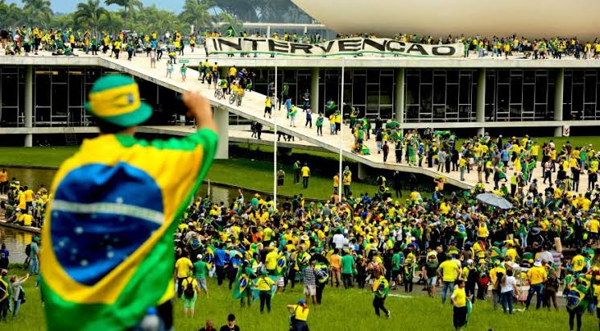

Topico: A sociedade
Segundo pesquisas do DataSenado mais de 80% dos brasileiros acredita que as mídias sociais tem influência nas opiniões políticas das pessoas. Esta mesma pesquisa traz dados de que quase metade dos entrevistados decidiu seu voto nas eleições de 2018 com a ajuda de redes sociais, sendo o whatsapp a rede mais utilizada para essa troca de informações, mas outras redes também tiveram grande parte nisso, como o Facebook, o Youtube, o Instagram e o Twitter. Pode-se perceber que o público jovem usa mais destes meios para a retenção de informação e decisões acerca de votos. Ainda de acordo com o DataSenado, as pessoas que mais se deixam influenciar pelas notícias de redes sociais são eleitores de direita, com escolaridade mais alta e pessoas com renda familiar mais alta.
